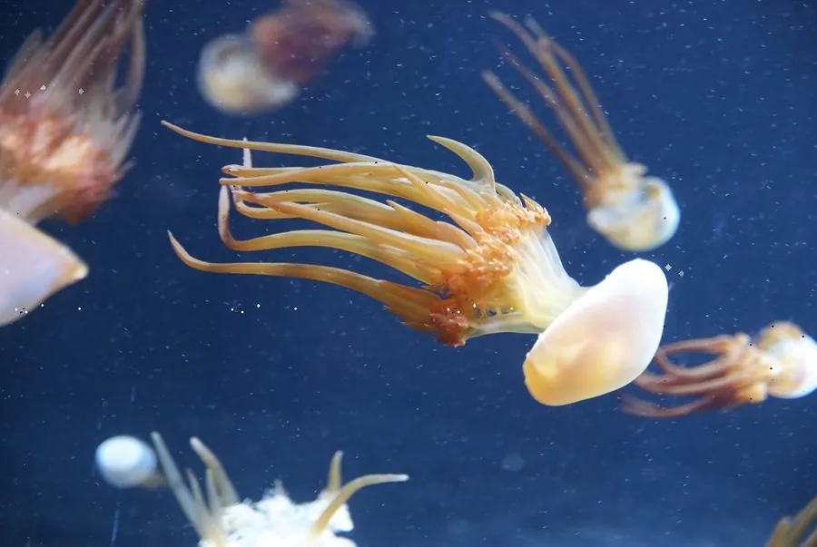

其他无脊椎动物 · 动物界
海蜇 Rhopilema esculentum

伞径可达半米以上的大型食用水母，伞部可制海蜇皮、口腕制海蜇头，但其刺细胞能造成剧痛蜇伤甚至危及生命。
- 分类
- 门刺胞动物门纲钵水母纲目根口水母目科海蜇科属海蜇属
- 栖息环境
- 近岸浅海、河口与海湾，随潮流和季风移动
- 地理分布
- 中国黄海、渤海、东海及日本、朝鲜半岛沿海
- 保护级别
- 暂无评估；因过度捕捞和环境变化资源下降，已开展增殖放流
物种志
海蜇的伞部呈半球形，直径通常30–60厘米，最大可达1米，重量可达20–30公斤，伞面呈青蓝、红褐或黄褐色，表面光滑。伞缘没有触手，口腕有八条，愈合后形成棒状和丝状的附属器，上面布满刺细胞。
海蜇的生活史有世代交替：水母体释放精卵，受精卵发育成浮浪幼虫，附着后变成微小的水螅体，水螅体再横裂产生碟状体，长成水母体。它生活在近岸浅海和河口，随潮流和季风移动，以浮游动物和小鱼为食。海蜇是中国重要的食用水母，伞部经明矾和食盐反复腌渍后成为海蜇皮，口腕则做成海蜇头。需要特别警惕的是，鲜海蜇的刺细胞能造成剧烈疼痛、红肿和水疱，严重时可引起呼吸困难甚至休克；死亡个体和脱落的触手仍能蜇人，处理时必须戴手套，被蜇后用海水冲洗并尽快就医。
形态与习性
- 伞径通常30–60厘米，最大可达1米
- 体重可达20–30公斤
- 口腕八条，愈合后形成棒状附属器
- 生活史水母体与水螅体世代交替
- 食用伞部制海蜇皮，口腕制海蜇头
- 蜇伤刺细胞可致剧痛、红肿，严重时休克
- 急救海水冲洗、戴手套去除触手、尽快就医
趣味知识
- 海蜇皮是伞部腌制的，海蜇头其实是它的口腕。
- 死掉的海蜇和脱落的触手，仍然能蜇伤人。
- 它的生活史要经过水螅体和碟状体阶段。